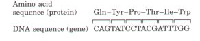
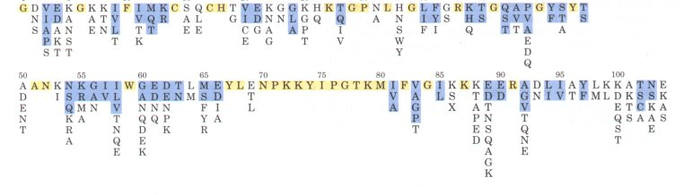
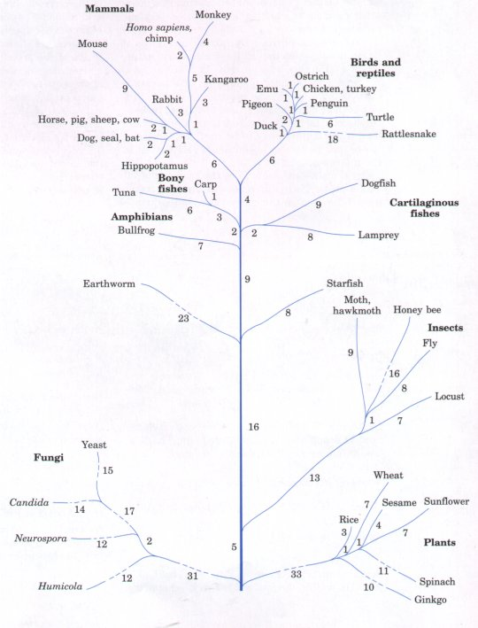

The approach outlined above is not the only way to obtain amino acid sequences. The development of rapid DNA sequencing methods (Chapter 12), the elucidation of the genetic code (Chapter 26), and the development of techniques for the isolation of genes (Chapter 28) make it possible to deduce the sequence of a polypeptide by determining the sequence of nucleotides in its gene (Fig. 6-14). The two techniques are complementary. When the gene is available, sequencing the DNA can be faster and more accurate than sequencing the protein. If the gene has not been isolated, direct sequencing of peptides is necessary, and this can provide information (e.g., the location of disulfide bonds) not available in a DNA sequence. In addition, a knowledge of the amino acid sequence can greatly facilitate the isolation of the corresponding gene (Chapter 28). |
 Figure 6-14 Correspondence of DNA and amino acid sequences. Each amino acid is encoded by a specific sequence of three nucleotides (triplet) in DNA. The genetic code is described in detail in Chapter 26. |
The sequence of amino acids in a protein can offer insights into its three-dimensional structure and its function, cellular location, and evolution. Most of these insights are derived by searching for similarities with other known sequences. Thousands of sequences are known and available in computerized data bases. The comparison of a newly obtained sequence with this large bank of stored sequences often reveals relationships both surprising and enlightening.
The relationship between amino acid sequence and three-dimensional structure, and between structure and function, is not understood in detail. However, a growing number of protein families are being revealed that have at least some shared structural and functional features that can be readily identified on the basis of amino acid sequence similarities alone. For example, there are four major families of proteases, several families of naturally occurring protease inhibitors, a large number of closely related protein kinases, and a similar large number of related protein phosphatases. Individual proteins are generally assigned to families by the degree of similarity in amino acid sequence (identical to other members of the family across 30% or more of the sequence), and proteins in these families generally share at least some structural and functional characteristics. Some families are defined, however, by identities involving only a few amino acids that are critical to a certain function. Many membrane-bound protein receptors share important structural features and have similar amino acid sequences, even though the extracellular molecules they bind are quite different. Even the immunoglobulin family includes a host of extracellular and cell-surface proteins in addition to antibodies.
The similarities may involve the entire protein or may be conimed to relatively small segments of it. A number of similar substructures (domains) occur in many functionally unrelated proteins. An example is a 40 to 45 amino acid sequence called the EGF (epidermal growth factor) domain that makes up part of the structure of urokinase, the low-density lipoprotein receptor, several proteins involved in blood clotting, and many others. These domains often fold up into structural configurations that have an unusual degree of stability or that are specialized for a certain environment. Evolutionary relationships can also be inferred from the structural and functional similarities within protein families.
Certain amino acid sequences often serve as signals that determine the cellular location, chemical modification, and half life of a protein. Special signal sequences, usually at the amino terminus, are used to target certain proteins for export from the cell, while other proteins are distributed to the nucleus, the cell surface, the cytosol, and other cellular locations. Other sequences act as attachment sites for prosthetic groups, such as glycosyl groups in glycoproteins and lipids in lipoproteins. Some of these signals are well characterized, and are easily recognized if they occur in the sequence of a newly discovered protein.
The probability that information about a new protein can be deduced from its primary structure improves constantly with the almost daily addition to the number of published amino acid sequences stored in shared databanks.
Several important conclusions have come from study of the amino acid sequences of homologous proteins from different species. Homologous proteins are those that are evolutionarily related. They usually perform the same function in different species; an example is hemoglobin, which has the same oxygen-transport function in different vertebrates. Homologous proteins from different species often have polypeptide chains that are identical or nearly identical in length. Many positions in the amino acid sequence are occupied by the same amino acid in all species and are thus called invariant residues. But in other positions there may be considerable variation in the amino acid from one species to another; these are called variable residues.

Figure 6-15 The amino acid sequence of human cytochrome c. Amino acid substitutions found at different positions in the cytochrome c of other species are listed below the sequence of the human protein. The amino acids are color-coded to help distinguish conservative and nonconservative substitutions: invariant amino acids are shaded in yellow, conservative amino acid substitutions are shaded in blue, and nonconservative substitutions are unshaded. X is an unusual amino acid, trimethyllysine. The one-letter abbreviations for amino acids are used here (see Table 5-1).
The functional significance of sequence homology can be illustrated by cytochrome c, an iron-containing mitochondrial protein that transfers electrons during biological oxidations in eukaryotic cells. The polypeptide chain of this protein has a molecular weight of about 13,000 and has about 100 amino acid residues in most species. The amino acid sequences of cytochrome c from over 60 different species have been determined, and 27 positions in the chain of amino acid residues are invariant in all species tested (Fig. 6-15), suggesting that they are the most important residues specifying the biological activity of cytochrome c. The residues in other positions in the chain exhibit some interspecies variation. There are clear gradations in the number of changes observed in the variable residues. In some positions, all substitutions involve similar amino acid residues (e.g., Arg will replace Lys, both of which are positively charged); these are called conservative substitutions. At other positions the substitutions are more random. As we will show in the next chapter, the polypeptide chains of proteins are folded into characteristic and specific conformations and these conformations depend on amino acid sequence. Clearly, the invariant residues are more critical to the structure and function of a protein than the variable ones. Recognizing which amino acids fall into each category is an important step in deciphering the complicated question of how amino acid sequence is translated into a specific threedimensional structure.
The variable amino acids provide information of another sort. Evolution is sometimes regarded as a theory that is accepted but difficult to test, yet the phylogenetic trees established by taxonomy have been tested and experimentally confirmed through biochemistry. The exam ination of sequences of cytochrome c and other homologous proteins has led to an important conclusion: the number of residues that differ in homologous proteins from any two species is in proportion to the phylogenetic difference between those species. For example, 48 amino acid residues differ in the cytochrome c molecules of the horse and of yeast, which are very widely separated species, whereas only two residues differ in the cytochrome c of the much more closely related duck and chicken. In fact, the cytochrome c molecule has identical amino acid sequences in the chicken and the turkey, and in the pig, cow, and sheep. Information on the number of residue differences between homologous proteins of different species allows the construction of evolutionary maps that show the origin and sequence of development of different animals and plants during the evolution of species (Fig. 616). The relationships established by taxonomy and biochemistry agree well.

Figure 6-16 Main branches of the evolutionary tree constructed from the number of amino acid dif ferences between cytochrome c molecules of different species. The numbers represent the number of residues by which the cytochrome c of a given line of organism differs from its ancestors.